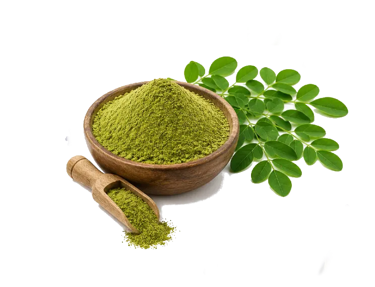
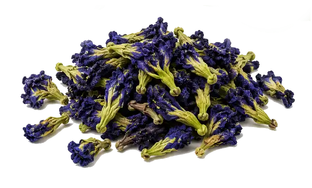

medication
Nutraceuticals & Dietary Supplements
Capsules, tablets, powders, functional food ingredients, superfood formulations
We are certified organic herbal ingredients suppliers from Sri Lanka, exporting premium Moringa powder and leaves, Butterfly Pea Flower, and Gotukola (Gotu Kola) to the EU, USA, and 40+ countries worldwide — serving nutraceutical, food, cosmetic, and pharmaceutical industries.



Sri Lanka's unique biodiversity, traditional cultivation methods, and strict organic farming standards produce herbal ingredients with superior bioactive compound profiles, purity, and therapeutic efficacy — trusted by leading supplement brands, cosmetic manufacturers, and pharmaceutical companies worldwide.
USDA NOP and EU Organic certified cultivation with complete traceability from farm to export — no synthetic pesticides, chemical fertilizers, or GMOs.
Sri Lanka's equatorial climate and rich volcanic soils create optimal growing conditions for Moringa, Butterfly Pea, and Gotukola with high bioactive concentrations.
Every batch tested by ISO 17025 accredited labs for bioactive markers, heavy metals, pesticides, microbiological purity, and moisture content.
2,500+ years of traditional knowledge in herb cultivation and processing — combining ancient wisdom with modern scientific extraction and drying methods.
Full regulatory compliance with FDA FSMA, EU Novel Food regulations, and international phytosanitary standards for seamless import clearance.
Established export infrastructure to 40+ countries with complete documentation support, competitive pricing, and reliable delivery timelines.
We supply three flagship Ceylon herbal ingredients in multiple forms and grades — Moringa, Butterfly Pea Flower, and Gotukola — each available with organic certification, complete analytical testing, and export documentation for global B2B buyers.
Moringa oleifera, known as the "Miracle Tree" or "Drumstick Tree," is one of the world's most nutrient-dense plants. Native to the Himalayan foothills and thriving in Sri Lanka's tropical climate, Moringa leaves contain exceptional levels of vitamins (A, C, E), minerals (calcium, iron, potassium), complete proteins with all 9 essential amino acids, and powerful antioxidants including quercetin, chlorogenic acid, and beta-carotene.
Our organic Moringa is cultivated in pesticide-free farms across Sri Lanka's dry zone regions, harvested at peak maturity, and processed using low-temperature drying to preserve bioactive compounds. Available as whole dried leaves, leaf powder (60–100 mesh), and encapsulation-grade powder. We also supply Moringa seeds and seed oil for cosmetic applications.
Technical data & export parameters
Our certified organic herbal ingredients serve diverse global industries seeking high-quality, scientifically validated botanical raw materials for product formulation and manufacturing.
Capsules, tablets, powders, functional food ingredients, superfood formulations
Active pharmaceutical ingredients, standardized extracts, traditional medicine formulations
Anti-aging skincare, hair care, natural colorants, herbal cosmetics
Herbal tea blends, functional beverages, wellness drinks, natural infusions
Energy bars, superfood powders, protein shakes, fortified foods
Ayurvedic formulations, TCM ingredients, herbal medicine manufacturing
Clean-label colorants, natural dyes, food & beverage coloring solutions
Natural pet supplements, functional pet treats, holistic animal health
Craft gin botanicals, natural cocktail ingredients, artisan spirits
Moringa oleifera, native to the Himalayan foothills and widely cultivated in Sri Lanka, is called a superfood due to its exceptional nutritional density. Moringa leaves contain 7× more Vitamin C than oranges, 4× more Vitamin A than carrots, 4× more calcium than milk, and 3× more potassium than bananas. Rich in protein (25-30%), all 9 essential amino acids, antioxidants (quercetin, chlorogenic acid), and anti-inflammatory compounds, it's used in dietary supplements, functional foods, cosmetics, and pharmaceutical formulations globally. Clinical research supports its use for blood sugar management, anti-inflammatory effects, and nutritional supplementation.
Butterfly Pea Flower (Clitoria ternatea) is primarily used as a natural blue food colorant (anthocyanin-based, no E-numbers), herbal tea ingredient, functional beverage additive, and cosmetic ingredient. Its rich anthocyanin content provides powerful antioxidant properties comparable to blueberries. The flower's unique pH-sensitive color-changing ability — shifting from deep blue to purple/pink when acidified — makes it extremely popular in mixology for color-changing cocktails, natural food coloring applications, and innovative beverage formulations. It's also used in nootropic supplements for cognitive support and in skincare for anti-aging and antioxidant benefits.
Gotukola (Centella asiatica), known as Gotu Kola or "Brahmi" in Ayurveda, is a clinically validated medicinal herb used for cognitive enhancement, wound healing, and circulatory support. Rich in pentacyclic triterpenoids — particularly asiaticoside, madecassoside, asiatic acid, and madecassic acid — it exhibits neuroprotective, dermatological, and vascular benefits supported by clinical research. Widely used in pharmaceutical formulations for wound healing and scar reduction, anti-aging cosmetics (collagen synthesis), cognitive supplements (memory and focus), and traditional Ayurvedic medicine for rejuvenation and mental clarity. The WHO monograph recognizes its efficacy in treating venous insufficiency and minor wound healing.
Yes. Our Moringa, Butterfly Pea Flower, and Gotukola are available with USDA NOP Organic, EU Organic (Regulation 2018/848), and other international organic certifications including Canada Organic, JAS (Japan), and Naturland. We source from certified organic farms in Sri Lanka with complete farm-to-export traceability. Every shipment includes organic certificates, Certificate of Inspection (COI), transaction certificates, and full documentation required for organic import clearance in your destination market. We also offer conventional (non-organic) options for budget-conscious buyers.
Every batch undergoes comprehensive testing by ISO 17025 accredited laboratories (SGS, Intertek, Eurofins, or equivalent). Standard testing includes: bioactive compound analysis (asiaticoside for Gotukola, anthocyanins for Butterfly Pea, protein/vitamins for Moringa), heavy metals (Pb, Cd, As, Hg — EU/FDA limits), pesticide residue screening (multi-residue analysis, organic verified as ND), microbiological testing (TPC, yeast/mold, E. coli, Salmonella), moisture content, ash content, foreign matter, and aflatoxins (for applicable products). Full Certificate of Analysis (CoA) provided with every shipment. Steam sterilization available on request for enhanced food safety compliance.
MOQ varies by product: Moringa Powder — 50kg; Butterfly Pea Flower — 25kg; Gotukola Powder — 50kg; Standardized Extracts — 5kg; Private Label Packaging — 500 units minimum. We are flexible for new importers, first-time buyers, and product development sampling. Free samples (50-100g) available on request for quality evaluation. For larger trial orders, we offer discounted pricing to help you test market demand before committing to full container loads. Contact our export team to discuss your specific requirements and volume pricing.
Sea freight from Colombo: EU ports (Hamburg, Rotterdam, Antwerp) — 22–28 days; US East Coast — 25–30 days; US West Coast — 20–25 days; Middle East (Dubai, Jeddah) — 12–15 days; Asia-Pacific — 7–20 days. Air freight available for urgent/sample orders: EU 2–4 days, USA 3–5 days, Middle East 1–2 days. We ship FOB Colombo, CIF, CFR, or DDP depending on your preference and import experience. For first-time importers, we recommend CIF (Cost, Insurance, Freight) where we arrange shipping and insurance to your destination port, simplifying the process. Payment terms: 30-50% advance, balance against copy of shipping documents (standard export terms). LC (Letter of Credit) accepted for large orders.